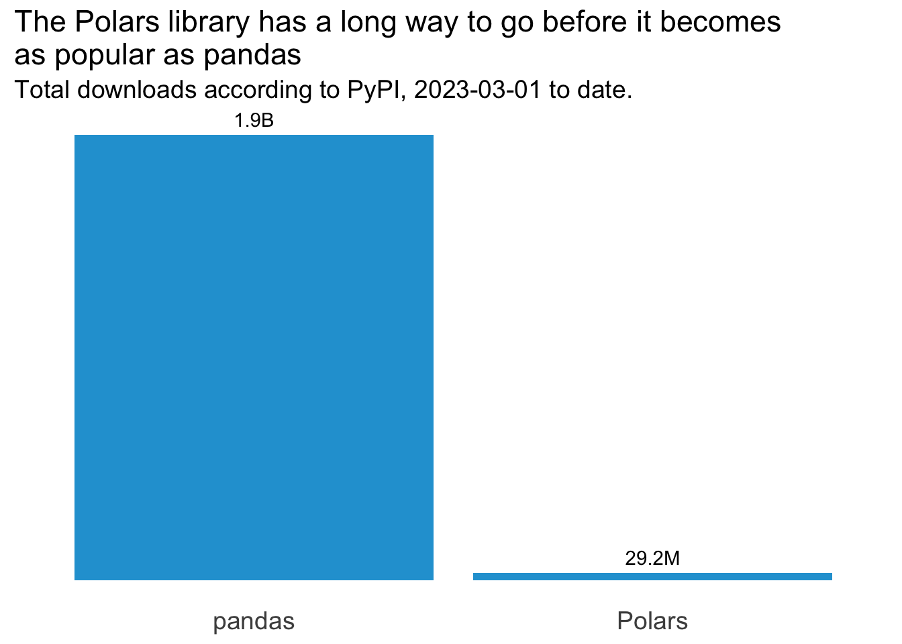
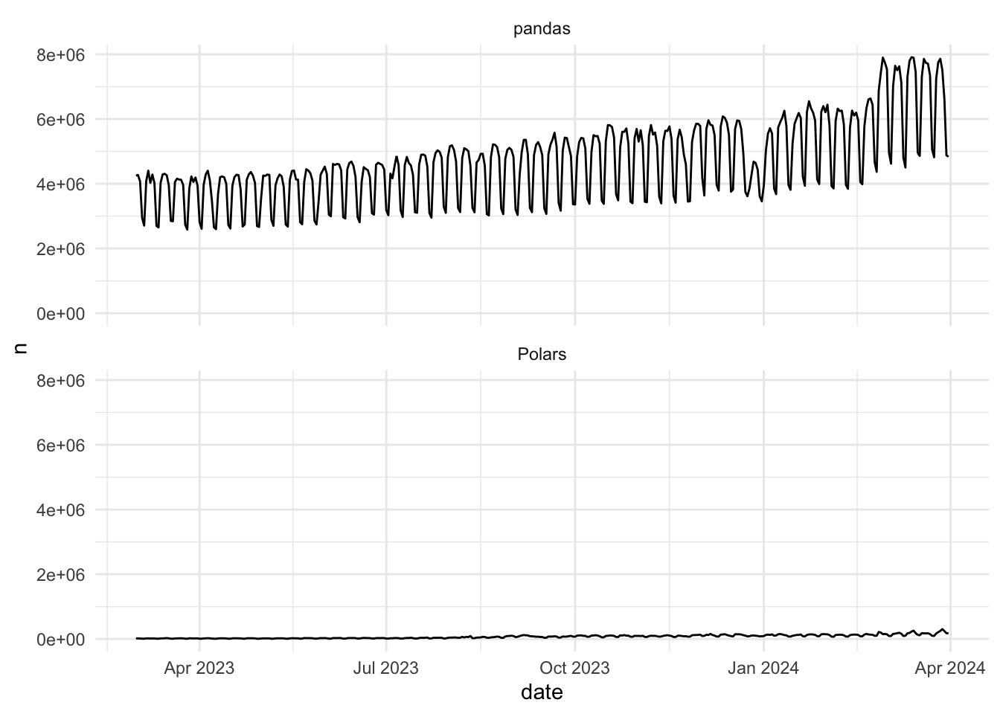
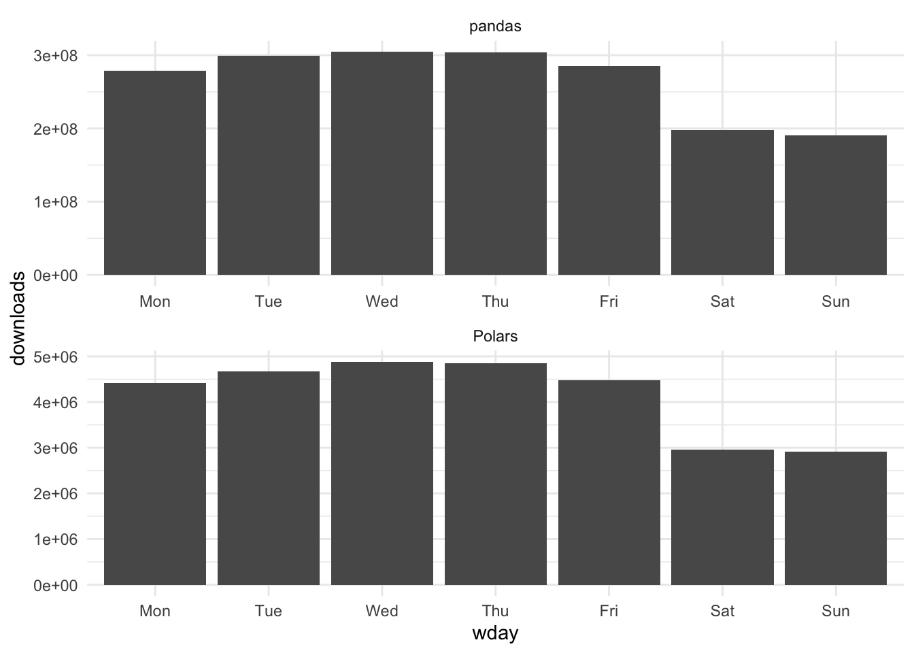
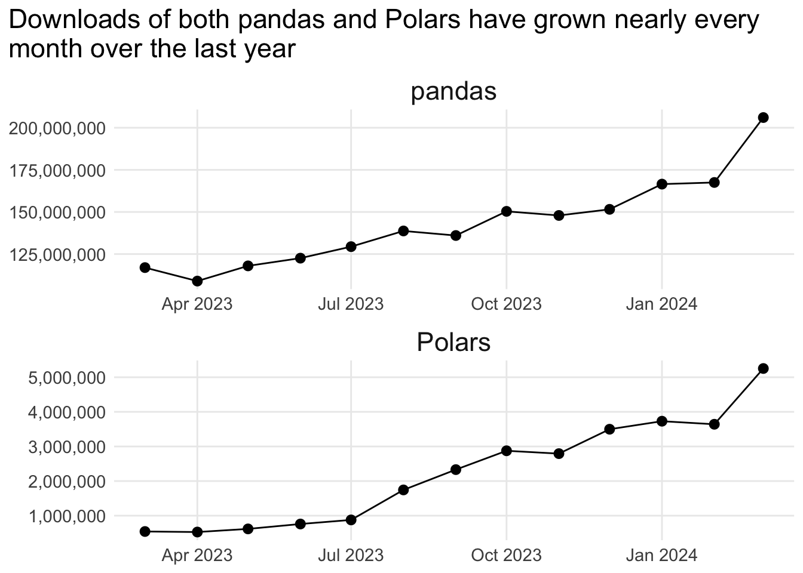

GCS_AUTH_FILE = "path/to/creds.json"
GCS_DEFAULT_LOCATION = "<nearest-location>"
GCS_DEFAULT_PROJECT_ID = "<your-project-id>"
GCE_AUTH_FILE = "path/to/creds.json"
GCE_DEFAULT_PROJECT_ID = "<your-project-id>"
GCE_DEFAULT_ZONE = "<nearest-zone>"Data Pipeline
Problem Description
This project is the final requirement for the Data Engineering Zoomcamp.
In this project, we’re going to evaluate the popularity of two Python libraries over the last year: Polars and pandas.
Polars is a blazingly fast DataFrame library for manipulating structured data. The core is written in Rust, and available for Python, R and NodeJS. For this project, we’re going to evaluate the popularity of its implementation in Python.
pandas is a fast, powerful, flexible and easy to use open source data analysis and manipulation tool, built on top of the Python programming language.
pandas was used in the Data Engineering Zoomcamp, but I found its ergonomics to be sub-optimal compared to R’s dplyr package. I recently read an excellent blogpost by Emily Riederer, in which she recommends Polars as it “may feel more natural and less error-prone to R users for may reasons”.
Polars is a relative newcomer, having been founded as an open source project in 2020, whereas pandas has been around for longer than dplyr. I was curious how Polars has been performing over the last year, and how its growth compares to pandas.
The data about these libraries comes from a public dataset hosted on Google BigQuery, which provides download stats on all the packages hosted on PyPI. I got the idea for using this dataset after watching a End-to-End Data Engineering tutorial on YouTube which uses this same dataset to analyse how the duckdb Python package has been performing. I’ve also found this blog post quite helpful. And, of course, everything I’ve learned in the course so far!
The GitHub repo for this project can be found here.
Limitations
Over the last couple of months I’ve had COVID and been challenged by my mental health. This has made it difficult to commit as much to the course as I would have liked to, but I’m still determined to complete this assignment on time. To achieve this whilst still putting my wellbeing first, I’m going to use R to build as much of the data pipeline as possible. Even though the course uses a variety of tools and it would be better to utilise them for this assignment, I have been writing R code most days for the past 4 years so I’m more likely to complete this assignment in time (and with greater ease) by using R. If I have a second shot at this, I will re-build the pipeline using Mage and dbt, and use Terraform for the IaC section.
Getting Started
If you want to follow along, start by running renv::restore() after cloning this repo to make sure you have the same versions of the same packages as I’m using
I’m assuming that you have a Google Cloud account, you’ve created a new project, and you’ve created a service account with the permissions described in this video. I also assume you’ve downloaded your key as a JSON file, and you’re pointing to that file in a .Renviron file in this project.
There’s actually a bunch of environment variables we’ll need to set up for this pipeline to run. The usethis package makes it easy to edit .Renviron files - just call usethis::edit_r_environ(scope="project") and it will take you to a newly-generated .Renviron file. Populate it with something similar to this:
The first set of variables above will configure the settings for accessing Google Cloud Storage, and we’re using the googleCloudStorageR package for this. The Data Engineering Zoomcamp uses Terraform, but in the interests of time I’ve opted for a R package instead to achieve the same ends.
Now let’s load the packages (the ones that will access the Google API will read the newly-created .Renviron file):
library(googleCloudStorageR)
library(janeaustenr)
library(tidytext)
library(dplyr)
library(googleComputeEngineR) # I didn't end up using this one
library(bigrquery)
library(ggplot2)
library(lubridate)
library(tidyr)
library(patchwork)Infrastructure as Code
Let’s create a new bucket where we’ll store our data. We’ll need to make we’re using a unique name for the new bucket, so to have some fun let’s grab a couple of words from the works of Jane Austen. Julie Silge’s instructions for her tidytext package really helped me here:
austen_words <- austen_books() |>
unnest_tokens(word, text) |>
anti_join(get_stopwords())Joining with `by = join_by(word)`bucket_words <- austen_words |>
pull(word) |>
unique() |>
sample(2)
bucket_words <- gsub('[[:punct:] ]+','', bucket_words)
bucket_numbers <- round(runif(1, 1, 10000))
bucket_name <- paste0(bucket_words[1], "_", bucket_words[2], bucket_numbers)
bucket_name[1] "fruition_ensigncy3576"Now we can create the bucket. Notice that I’m calling a couple of environment variables below - my GCP project ID and my the zone where I want to host the bucket, both of which are stored in the .Renviron file we created earlier.
gcs_create_bucket(
name = bucket_name,
projectId = Sys.getenv("GCS_DEFAULT_PROJECT_ID"),
location = Sys.getenv("GCS_DEFAULT_LOCATION"),
storageClass = c("MULTI_REGIONAL"),
predefinedAcl = c("projectPrivate"),
predefinedDefaultObjectAcl = c("bucketOwnerFullControl"),
projection = c("noAcl")
)ℹ 2024-04-02 17:57:50 > Bucket created successfully: fruition_ensigncy3576 in asia==Google Cloud Storage Bucket==
Bucket: fruition_ensigncy3576
Project Number: 403206438268
Location: ASIA
Class: MULTI_REGIONAL
Created: 2024-04-02 04:57:49
Updated: 2024-04-02 04:57:49
Versioning: FALSE
Meta-generation: 1
eTag: CAE= If all went well, you should see some text in the console which will confirm that the bucket creation was successful.
We’ll now set this bucket name as the default, to use again later when we’re uploading to it:
gcs_global_bucket(bucket_name)Set default bucket name to 'fruition_ensigncy3576'I wanted to created a VM as well, which I attempted to do below but it fails. Maybe I’ll try this again in future:
vm <- gce_vm(name = "test-vm", predefined_type = "f1-micro",
image_project = "ubuntu-os-cloud",
image_family = "ubuntu-2310-amd64")
## VM metadata
vmData Ingestion
Ideally the following steps would be handled in Mage, but in the interest of time we’re just going to lay it out in this Quarto doc. If time permits, we’ll migrate this code into Mage so that the process can be orchestrated.
We’re going to query the data about pandas and Polars from the BigQuery public dataset called pypi, and then save this to our GCP bucket as CSV files. First we’ll need to point the bigrquery package to our credentials in the JSON file via the environment variable in .Renviron:
bigrquery::bq_auth(path = Sys.getenv("GCS_AUTH_FILE"))And now we can query the PyPI data to get the number of downloads of pandas and Polars from the last 13 months, excluding the current month:
library(DBI)
query_tbl <- function(data, lib_name) {
this_month <- floor_date(Sys.Date(), unit = "months")
last_year <- this_month - months(13)
lib_stats <- data |>
filter(
project == lib_name,
as.Date(timestamp) >= last_year,
as.Date(timestamp) < this_month
) |>
mutate(date = as.Date(timestamp)) |>
count(date) |>
collect()
return(lib_stats)
}
con <- dbConnect(
bigrquery::bigquery(),
project = "bigquery-public-data",
dataset = "pypi",
billing = Sys.getenv("GCS_DEFAULT_PROJECT_ID")
)
downloads <- tbl(con, "file_downloads")
polars_stats <- query_tbl(downloads, "polars")
pandas_stats <- query_tbl(downloads, "pandas")
dbDisconnect(con)Now let’s upload this data as CSV files into our newly-created GCP bucket, and we’ll use the date of the data to determine the filename for it:
pandas_filename <- paste0("pandas-stats-", min(pandas_stats$date), "_",
max(pandas_stats$date))
polars_filename <- paste0("polars-stats-", min(polars_stats$date), "_",
max(polars_stats$date))
gcs_upload(pandas_stats, name = pandas_filename)ℹ 2024-04-02 17:58:02 > File size detected as 9.6 Kb==Google Cloud Storage Object==
Name: pandas-stats-2023-03-01_2024-03-31.csv
Type: text/csv
Size: 9.6 Kb
Media URL: https://www.googleapis.com/download/storage/v1/b/fruition_ensigncy3576/o/pandas-stats-2023-03-01_2024-03-31.csv?generation=1712033882568048&alt=media
Download URL: https://storage.cloud.google.com/fruition_ensigncy3576/pandas-stats-2023-03-01_2024-03-31.csv
Public Download URL: https://storage.googleapis.com/fruition_ensigncy3576/pandas-stats-2023-03-01_2024-03-31.csv
Bucket: fruition_ensigncy3576
ID: fruition_ensigncy3576/pandas-stats-2023-03-01_2024-03-31.csv/1712033882568048
MD5 Hash: G28nrLKwyGodPgGL+C9Zpw==
Class: MULTI_REGIONAL
Created: 2024-04-02 04:58:02
Updated: 2024-04-02 04:58:02
Generation: 1712033882568048
Meta Generation: 1
eTag: CPDqp5vfooUDEAE=
crc32c: BxPa0g== gcs_upload(polars_stats, name = polars_filename)ℹ 2024-04-02 17:58:02 > File size detected as 8.9 Kb==Google Cloud Storage Object==
Name: polars-stats-2023-03-01_2024-03-31.csv
Type: text/csv
Size: 8.9 Kb
Media URL: https://www.googleapis.com/download/storage/v1/b/fruition_ensigncy3576/o/polars-stats-2023-03-01_2024-03-31.csv?generation=1712033882933197&alt=media
Download URL: https://storage.cloud.google.com/fruition_ensigncy3576/polars-stats-2023-03-01_2024-03-31.csv
Public Download URL: https://storage.googleapis.com/fruition_ensigncy3576/polars-stats-2023-03-01_2024-03-31.csv
Bucket: fruition_ensigncy3576
ID: fruition_ensigncy3576/polars-stats-2023-03-01_2024-03-31.csv/1712033882933197
MD5 Hash: glOE+P686r1MJHaawJBNsA==
Class: MULTI_REGIONAL
Created: 2024-04-02 04:58:02
Updated: 2024-04-02 04:58:02
Generation: 1712033882933197
Meta Generation: 1
eTag: CM2PvpvfooUDEAE=
crc32c: utyf7g== Data Warehouse
Now let’s create a BigQuery dataset if we don’t already have it:
pypi <- bq_dataset(Sys.getenv("GCS_DEFAULT_PROJECT_ID"), "pypi")
dataset_exists <- bq_dataset_exists(pypi)
if(dataset_exists == FALSE) {
bq_dataset_create(pypi)
}Let’s combine our dataframes into one, making sure we tag each first:
pandas_tagged <- pandas_stats |>
mutate(library = "pandas")
polars_tagged <- polars_stats |>
mutate(library = "polars")
python_lib_stats <- bind_rows(pandas_tagged, polars_tagged)Next, let’s create a BigQuery table if we don’t already have it:
stats_tbl <- bq_table(pypi, "python_lib_stats")
table_exists <- bq_table_exists(stats_tbl)
if(table_exists == FALSE) {
fields <- as_bq_fields(python_lib_stats)
bq_table_create(stats_tbl, fields)
}<bq_table> bigquerylearning-402002.pypi.python_lib_statsNow we can load this into our BigQuery table:
bq_table <- bq_table(Sys.getenv("GCS_DEFAULT_PROJECT_ID"), "pypi",
"python_lib_stats", type = "TABLE")
bq_table_upload(bq_table, python_lib_stats)Analysis
For the final step in this process, let’s create a dashboard to compare the popularity of these two Python libraries. Step one is to grab the data we’ve uploaded to BigQuery:
con <- dbConnect(
bigrquery::bigquery(),
project = Sys.getenv("GCS_DEFAULT_PROJECT_ID"),
dataset = "pypi",
billing = Sys.getenv("GCS_DEFAULT_PROJECT_ID")
)
downloads <- tbl(con, "python_lib_stats") |>
collect() |>
mutate(library = ifelse(library == "polars", "Polars", "pandas"))
dbDisconnect(con)And now we’ll use ggplot2 to visualise this. We’ll explore the data across several charts, and then stitch them together into a single dashboard view using patchwork. First, let’s compare the total number of downloads over the last year for each of the two libraries we’re interested in. We need to sum the downloads by library first:
total_downloads <- downloads |>
summarise(total_downloads = sum(n), .by = "library")Now we can create the visual from this data:
total_downloads <- ggplot(total_downloads, aes(x = library, y = total_downloads)) +
geom_col(fill = "#23a1d6") +
geom_text(aes(label = scales::label_number(
accuracy = 0.1, scale_cut = scales::cut_short_scale()
)(total_downloads)), vjust = -0.6) +
theme_minimal() +
theme(
axis.title = element_blank(),
axis.text.y = element_blank(),
axis.text.x = element_text(size=14),
panel.grid = element_blank(),
title = element_text(size=14)
) +
labs(
title = "The Polars library has a long way to go before it becomes\nas popular as pandas",
subtitle = paste0("Total downloads according to PyPI, ", min(downloads$date), " to date.")
)
total_downloads
Woah, pandas has had way more downloads compared to Polars than I’d expected! But to what extent is each library growing in popularity over time? Let’s look at a basic trend chart first:
basic_trend <- ggplot(downloads) +
geom_line(aes(x = date, y = n)) +
facet_wrap(~library, nrow = 2) +
theme_minimal()
basic_trend
Hmmm, this doesn’t tell us anything we didn’t already know by comparing the annual totals. There is an interesting wave pattern to the data though - might this be based on days of the week? Let’s sum the totals by weekday to find out (we’ll allow independent scales here because we’re interested in the pattern of the data for each library, as opposed to a comparison of each).
weekday_pattern <- downloads |>
mutate(wday = wday(date, label = TRUE, week_start = 1)) |>
summarise(downloads = sum(n), .by = c("library", "wday")) |>
ggplot() +
geom_col(aes(x = wday, y = downloads)) +
facet_wrap(~library, nrow = 2, scales = "free") +
theme_minimal()
weekday_pattern
Sure enough, there’s a noticeable dip on the weekend for both - that makes sense. But how do understand the true trend in the data for each of these libraries?
We have 13 months of data, so let’s group by month first:
downloads_by_month <- downloads |>
mutate(month = floor_date(date, unit = "month")) |>
summarise(downloads = sum(n), .by = c("library", "month"))And now let’s plot these monthly values:
ggplot(downloads_by_month, aes(x = month, y = downloads)) +
geom_line() +
geom_point(size = 2.5) +
facet_wrap(~library, nrow = 2, scales = "free")
Again, we’ve set the scales to “free” here to clearly see the shape of the downloads data for each Python library, and they tell a similar story: growth nearly every month over the last year, with last month (March 2024) performing especially well. But because the absolute values are very different, it’s hard to tell if they’re growing at the same rate or not.
To round off this analysis, let’s look at the % change in monthly downloads at the start of the time period to the end of the time period:
yoy_change <- downloads_by_month |>
arrange(month) |>
slice(c(1, n()), .by = "library") |>
mutate(month = month(month, label = TRUE)) |>
pivot_wider(names_from = "month", values_from = "downloads") |>
mutate(
variance = Mar-Apr,
perc_change = round((variance/Apr)*100)
)
yoy_changeDashboard
Now that we’ve concluded our analysis, let’s bring everything together into a single dashboard. We’ll show the overall comparison between the two libraries, the weekday patterns, and finally the year-on-year change: